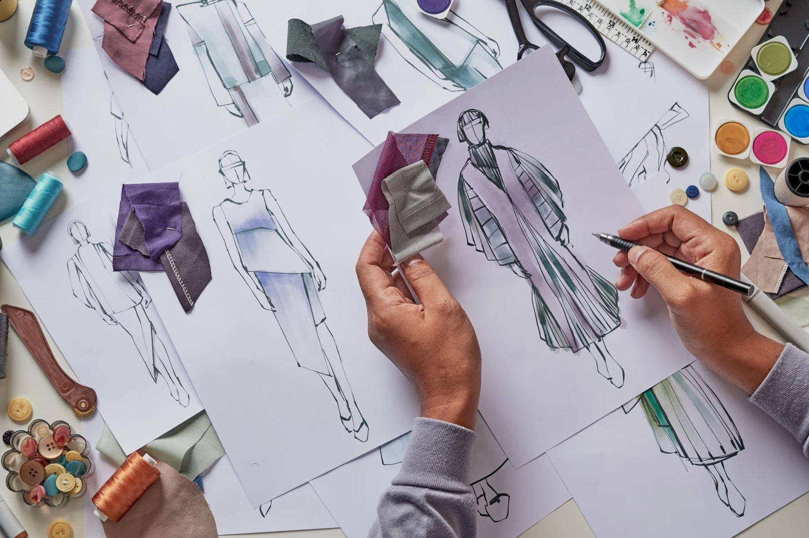

A curated journey through centuries of theatrical costume design
The story in a musical theatre production is most notably told through characters,dialogue, and music, but what goes unnoticed is just how powerful and useful a costume can be for message indication, character background, world building, personal infliction, and breakthrough. Through the art of placement, colours, added physical attributes, and story-based context, we learn an element of the story unspoken, and discover a part of art powerful through display that has reigned in power and abilities through centuries.